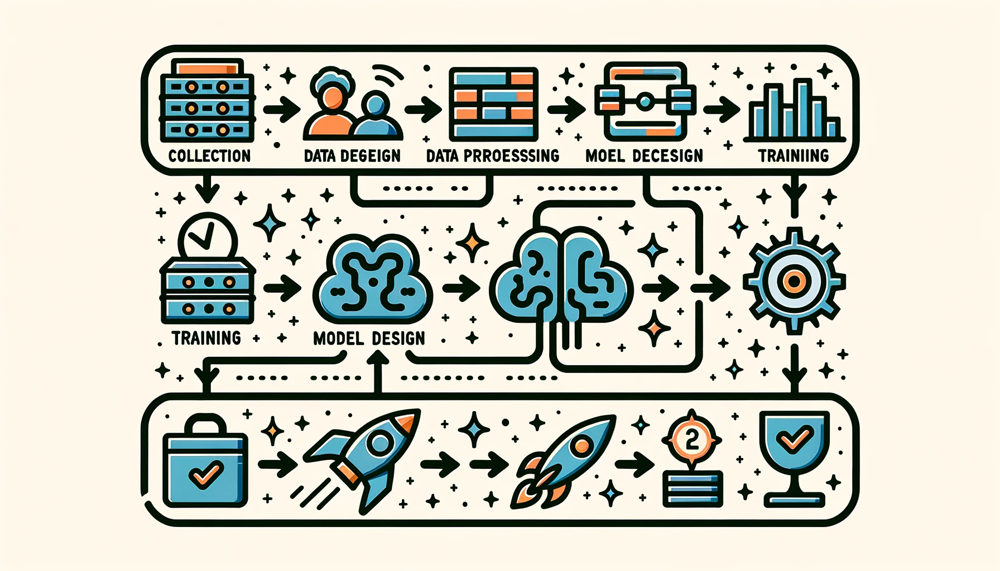

AI Workflow
DALL·E 3 Prompt: Create a rectangular illustration of a stylized flowchart representing the AI workflow/pipeline. From left to right, depict the stages as follows: ‘Data Collection’ with a database icon, ‘Data Preprocessing’ with a filter icon, ‘Model Design’ with a brain icon, ‘Training’ with a weight icon, ‘Evaluation’ with a checkmark, and ‘Deployment’ with a rocket. Connect each stage with arrows to guide the viewer horizontally through the AI processes, emphasizing these steps’ sequential and interconnected nature.

Purpose
How do structured workflows transform machine learning development from ad-hoc experimentation into reliable, reproducible engineering processes?
Machine learning development begins with exploratory data analysis and experimental model training, yet production systems require systematic, repeatable processes. Structured workflows establish standardized stages for data collection, model development, validation, and deployment. These workflows address critical engineering challenges: ensuring data quality and consistency, managing model versioning and experimentation, automating testing and validation, and coordinating deployment across different environments. Systematic workflows enable teams to build reproducible systems, reduce development cycles, and maintain quality standards. This transformation from experimental prototyping to engineering discipline creates the operational foundation that supports reliable production deployments.
Understand the ML lifecycle’s structured approach and stages for developing, deploying, and maintaining machine learning models.
Identify the unique challenges and distinctions between traditional software and machine learning lifecycles.
Analyze the roles and collaboration patterns essential for successful ML projects.
Examine system-level considerations, including resource constraints, infrastructure, and deployment environments.
Recognize the iterative nature of ML lifecycles and how feedback loops drive continuous improvement in real-world applications.
Overview
The machine learning lifecycle represents a fundamental shift from traditional software development, where success depends not only on writing correct code, but on orchestrating complex interactions between data, models, and production systems. Understanding this lifecycle as an integrated system, rather than a sequence of independent tasks, is essential to building reliable AI systems that perform well beyond the laboratory.
This chapter examines the AI lifecycle through Google’s diabetic retinopathy (DR) screening system (Gulshan et al. 2016). This case study demonstrates how seemingly straightforward AI problems become complex systems challenges when moving from research to clinical practice, illustrating the interconnected nature of lifecycle stages and the importance of systems thinking in AI development.
Using this real-world deployment experience, we explore how the ML lifecycle differs from traditional software development. Figure 1 illustrates the complete lifecycle, showing both the primary flow of data and model development as well as the crucial feedback loops that enable continuous improvement. Unlike traditional software where stages typically flow in one direction, machine learning systems require continuous feedback between all stages. Insights from deployment often necessitate changes to data collection, model architecture, and validation approaches.
These feedback relationships become particularly evident when examining the complete system architecture.
{kind=link}
The lifecycle operates through five interconnected phases that build progressively in complexity:
Phase 1 involves foundation building, which encompasses problem definition and initial data collection, establishing the fundamental requirements and constraints that will shape all subsequent decisions.
The next phase focuses on creating robust data infrastructure.
Phase 2 focuses on data ecosystem development, which involves building robust data pipelines, validation systems, and preprocessing workflows that can handle the scale and variability of real-world data.
Development then shifts to creating and optimizing the models themselves.
Phase 3: Model Development and Optimization focuses on creating, training, and refining models while balancing performance with operational constraints.
The next phase addresses the transition from development to production environments.
Phase 4: Production Integration addresses the complex challenge of deploying models into real-world systems while maintaining reliability and performance.
Successful deployment establishes the foundation for ongoing system evolution and improvement.
Phase 5: Continuous Evolution establishes monitoring, maintenance, and improvement processes that ensure long-term system effectiveness.
Each phase introduces new complexity while building upon foundations established in previous phases. This progressive approach reflects the reality that ML systems cannot be built successfully by jumping directly to advanced techniques without first establishing solid foundations1.
1 MLOps Maturity Models: Organizations typically progress through 5 maturity levels, from manual processes (Level 0) to fully automated ML pipelines (Level 4). Google’s MLOps maturity model (Kreuzberger, Kühl, and Hirschl 2023), published in 2021, shows that approximately 20-25% of organizations reach Level 3+ automation, while 75-80% remain in manual or semi-automated processes. Companies at higher maturity levels report 35% faster time-to-market and 50% fewer production incidents, but require 18-24 months and significant cultural changes to advance between levels.
This systematic progression is governed by fundamental principles that distinguish AI development from conventional software engineering.
Lifecycle Integration Principles
The systematic integration of these lifecycle stages follows three key principles that are explored in detail in the Systems Thinking section: Interdependence (how decisions cascade across stages), Continuous Feedback (how insights flow between phases), and Emergent Complexity (how system behaviors arise from component interactions).
These principles explain why successful AI systems require different development approaches than traditional software, and why understanding the complete lifecycle is essential before examining implementation details.
This integrated perspective shapes how we approach each phase of development. Rather than optimizing individual components in isolation, successful AI systems require continuous coordination between data teams managing pipeline development, model teams handling training infrastructure, and infrastructure teams providing deployment platforms. The operational practices for managing these complex integrations in production environments are comprehensively addressed in Chapter 12: ML Operations. Understanding these integration challenges is essential before examining the specific techniques and tools used within each lifecycle stage.
As these coordination requirements illustrate, the AI lifecycle operates within a complex web of dependencies and feedback loops. The following sections examine each phase in detail, showing how the DR case study navigated the complexity of real-world AI deployment while maintaining the integration principles that ensure long-term success. These challenges are compounded in production ML systems, where continuous integration and deployment practices2 must account for both code changes and data evolution3.
2 CI/CD for Machine Learning: Traditional continuous integration is designed for deterministic builds where code changes produce predictable outputs. ML systems violate this assumption because model behavior depends on training data, random initialization, and hardware differences. Google’s TFX and similar platforms had to reinvent CI/CD principles for ML, introducing concepts like “model validation†and “data validation†that have no equivalent in traditional software.
3 Data Evolution in Production: Unlike traditional software where inputs are static, ML system inputs evolve continuously: user behavior changes, market conditions shift, and sensor data drifts. Netflix reports that their recommendation models see approximately 10-15% of features become stale monthly (Gomez-Uribe and Hunt 2015), while financial fraud detection models experience 30-40% feature drift quarterly (Arsene, Dumitrache, and Mihu 2015). This constant evolution means ML systems require “data testing†pipelines that validate 200+ statistical properties of incoming data, a complexity absent in traditional software where input validation involves simple type checking (Breck et al. 2017).
Before examining specific lifecycle stages, we establish a precise understanding of what distinguishes the ML lifecycle from traditional software development approaches. This foundation guides our examination of how each stage contributes to successful AI system development.
To build this foundation, we begin by defining what we mean by the machine learning lifecycle and how it differs from conventional development processes.
Defining the ML Lifecycle
To understand why AI systems require specialized development approaches, we first establish what we mean by the “machine learning lifecycle†and how it differs from traditional software development processes.
The machine learning (ML) lifecycle is a structured, iterative process that guides the development, evaluation, and improvement of machine learning systems. Integrating ML into broader software engineering practices introduces unique challenges that require systematic approaches to experimentation, evaluation, and adaptation over time (Amershi et al. 2019). This systematic approach builds upon decades of structured development methodologies (Chapman et al. 2000) that have evolved to address the unique challenges of data-driven systems, creating new challenges distinct from traditional software engineering approaches.
Rather than prescribing a fixed methodology, the ML lifecycle focuses on achieving specific objectives at each stage. This flexibility allows practitioners to adapt the process to the unique constraints and goals of individual projects. Typical stages include problem formulation, data acquisition and preprocessing, model development and training, evaluation, deployment, and ongoing optimization. Modern practitioners often use interactive development environments like Jupyter (Thomas et al. 2016) that support this iterative, experimental approach to ML system development, often integrated within the broader framework ecosystems detailed in Chapter 5: AI Frameworks.
Although these stages appear sequential, they are frequently revisited, creating a dynamic and interconnected process. The iterative nature of the lifecycle creates feedback loops, where insights from later stages, including deployment, can inform earlier phases, including data preparation or model architecture design. This adaptability is essential for managing the uncertainties and complexities inherent in real-world ML applications. The systematic approaches to managing these feedback loops in production systems, including data versioning and lineage tracking, are detailed in Chapter 8: Data Engineering.
This iterative, feedback-driven structure provides an organizing framework for both practitioners and students. The ML lifecycle provides a clear framework for organizing the study of machine learning systems. By decomposing the field into well-defined stages, students can engage systematically with its core components. This structure mirrors industrial practice while supporting conceptual understanding.
Having established this conceptual foundation, we can now distinguish between the lifecycle framework and related operational concepts. We distinguish between the ML lifecycle and machine learning operations (MLOps), as the two are often conflated. The ML lifecycle, as presented in this chapter, addresses the stages and evolution of ML systems: the “what†and “why†of system development. In contrast, MLOps, discussed in Chapter 12: ML Operations, addresses the “how,†focusing on tools, processes, and automation that support efficient implementation and maintenance. This includes the critical production concerns of incident response, debugging complex ML system failures, and maintaining operational excellence at scale. Understanding the lifecycle first provides a conceptual foundation for the operational aspects that follow.
Traditional vs. AI Lifecycles
Software development lifecycles have evolved through decades of engineering practice, establishing well-defined patterns for system development. Traditional lifecycles consist of sequential phases: requirements gathering, system design, implementation, testing, and deployment (Royce 1987). Each phase produces specific artifacts that serve as inputs to subsequent phases. In financial software development, the requirements phase produces detailed specifications for transaction processing, security protocols, and regulatory compliance. These specifications translate directly into system behavior through explicit programming, contrasting sharply with the probabilistic nature of ML systems explored throughout Chapter 1: Introduction.
4 ML-Based Fraud Detection Evolution: Traditional rule-based fraud systems (developed in the 1990s) had 60-70% accuracy and generated 20-30% false positives, causing customer friction. Modern ML fraud detection, pioneered by companies like PayPal (2000s) and Stripe (2010s), achieves 95%+ accuracy with <1% false positive rates by analyzing 500+ behavioral features in real-time (Arsene, Dumitrache, and Mihu 2015). However, this improvement comes with new challenges: fraudsters adapt to ML patterns within 3-6 months, requiring continuous model retraining that rule-based systems never needed (Arsene, Dumitrache, and Mihu 2015).
This deterministic approach differs from the uncertainty inherent in machine learning systems. Machine learning systems require a different approach to this traditional lifecycle model. The deterministic nature of conventional software, where behavior is explicitly programmed, contrasts with the probabilistic nature of ML systems. Consider financial transaction processing: traditional systems follow predetermined rules (if account balance > transaction amount, then allow transaction), while ML-based fraud detection systems4 learn to recognize suspicious patterns from historical transaction data. This shift from explicit programming to learned behavior reshapes the development lifecycle, altering how we approach system reliability and robustness as detailed in Chapter 14: Robust AI.
These fundamental differences in system behavior create cascading effects throughout the development process. The unique characteristics of machine learning systems, characterized by data dependency, probabilistic outputs (Domingos 2012), and evolving performance, introduce new dynamics that alter how lifecycle stages interact. These systems require ongoing refinement, with insights from later stages frequently feeding back into earlier ones. Machine learning systems are inherently dynamic and must adapt to changing data distributions and objectives through continuous deployment5 practices.
5 Continuous Deployment: Software engineering practice where code changes are automatically deployed to production after passing automated tests, enabling multiple deployments per day instead of monthly releases. Popularized by companies like Netflix (2008) and Etsy (2009), continuous deployment reduces deployment risk through small, frequent changes rather than large, infrequent releases. However, ML systems require specialized continuous deployment because models need statistical validation, gradual rollouts with A/B testing, and rollback mechanisms based on performance metrics rather than just functional correctness.
6 Data Versioning Challenges: Unlike code, which changes through discrete edits, data can change gradually through drift, suddenly through schema changes, or subtly through quality degradation. Traditional version control systems like Git struggle with large datasets, leading to specialized tools like Git LFS and DVC.
These contrasts become clearer when we examine the specific differences across development lifecycle dimensions. The key distinctions are summarized in Table 1 below. These differences reflect the core challenge of working with data as a first-class citizen in system design, something traditional software engineering methodologies were not designed to handle6.
| Aspect | Traditional Software Lifecycles | Machine Learning Lifecycles |
|---|---|---|
| Problem Definition | Precise functional specifications are defined upfront. | Performance-driven objectives evolve as the problem space is explored. |
| Development Process | Linear progression of feature implementation. | Iterative experimentation with data, features and models. |
| Testing and Validation | Deterministic, binary pass/fail testing criteria. | Statistical validation and metrics that involve uncertainty. |
| Deployment | Behavior remains static until explicitly updated. | Performance may change over time due to shifts in data distributions. |
| Maintenance | Maintenance involves modifying code to address bugs or add features. | Continuous monitoring, updating data pipelines, retraining models, and adapting to new data distributions. |
| Feedback Loops | Minimal; later stages rarely impact earlier phases. | Frequent; insights from deployment and monitoring often refine earlier stages like data preparation and model design. |
These differences emphasize the need for a robust ML lifecycle framework that can accommodate iterative development, dynamic behavior, and data-driven decision-making. Understanding these distinctions prepares us to examine how ML projects unfold through their lifecycle stages, each presenting unique challenges that traditional software methodologies cannot adequately address.
With this foundation established, we can now explore the specific stages that comprise the ML lifecycle and how they work together to address these unique challenges.
Lifecycle Stages
Having established why AI systems require specialized development approaches, we now examine the specific stages that comprise the ML lifecycle. These stages operate as an integrated framework where each builds upon previous foundations while preparing for subsequent phases, an interconnected approach detailed in our earlier discussion of lifecycle integration principles.
The following framework illustrates how these stages work together to manage AI system complexity. Figure 2 illustrates the six core stages that characterize successful AI system development. These stages operate through continuous feedback loops, with insights from later stages frequently informing refinements in earlier phases. This cyclical nature reflects the experimental and data-driven characteristics that distinguish ML development from conventional software engineering.

The lifecycle begins with problem definition and requirements gathering, where teams clearly define the problem to be solved, establish measurable performance objectives, and identify key constraints. Precise problem definition ensures alignment between the system’s goals and the desired outcomes, setting the foundation for all subsequent work.
The next stage assembles the data resources needed to realize these objectives. Data collection and preparation includes gathering relevant data, cleaning it, and preparing it for model training. This process involves curating diverse datasets, ensuring high-quality labeling, and developing preprocessing pipelines to address variations in the data. The complexities of this stage are explored in Chapter 8: Data Engineering.
Building upon prepared data, the development process creates models that can learn from these resources. Model development and training involves selecting appropriate algorithms, designing model architectures, and training models using the prepared data. Success depends on choosing techniques suited to the problem and iterating on the model design for optimal performance. Advanced training approaches and distributed training strategies are detailed in Chapter 6: AI Training, while the underlying architectures are covered in Chapter 4: DNN Architectures.
Rigorous evaluation ensures trained models meet performance requirements before deployment. This evaluation and validation stage involves rigorously testing the model’s performance against predefined metrics and validating its behavior in different scenarios, ensuring the model is accurate, reliable, and robust in real-world conditions.
Validated models transition from development environments to operational systems through careful deployment processes. Deployment and integration requires addressing practical challenges such as system compatibility, scalability, and operational constraints across different deployment contexts ranging from cloud to edge environments, as explored in Chapter 2: ML Systems.
Finally, deployed systems require ongoing oversight to maintain performance and adapt to changing conditions. This monitoring and maintenance stage focuses on continuously tracking the system’s performance in real-world environments and updating it as necessary. Effective monitoring ensures the system remains relevant and accurate over time, adapting to changes in data, requirements, or external conditions.
To illustrate how these stages work together in practice, we follow the development of a real-world medical AI system.
Our Journey Through the AI Lifecycle: The DR Screening System
To illustrate these lifecycle principles, we follow the development of Google’s diabetic retinopathy (DR) screening system from initial research to widespread clinical deployment (Gulshan et al. 2016). This real-world case study reveals how each lifecycle stage presents unique challenges that cannot be solved in isolation, demonstrating the importance of integrated systems thinking.
At first glance, the DR screening challenge appeared to be a straightforward computer vision problem: develop an AI system to analyze retinal images and detect signs of diabetic retinopathy with accuracy comparable to expert ophthalmologists. The initial research results were promising, achieving expert-level performance in controlled laboratory conditions. However, the journey from research success to clinical impact revealed the complexity of the AI lifecycle, where technical excellence must integrate with operational realities, regulatory requirements, and real-world deployment constraints.
The scale of this medical challenge underscores why AI-assisted screening became not just technically interesting but medically essential. Diabetic retinopathy affects over 100 million people worldwide and represents a leading cause of preventable blindness7. Figure 3 shows the clinical challenge: distinguishing healthy retinas from those showing early signs of retinopathy, such as the characteristic hemorrhages visible as dark red spots. While this appears to be a straightforward image classification problem, the path from laboratory success to clinical deployment illustrates every aspect of the AI lifecycle complexity.
7 Diabetic Retinopathy Global Impact: Affects over 103 million people worldwide, with 28.5% of diabetic patients developing some form of retinopathy (Steinmetz et al. 2024). In developing countries, up to 90% of vision loss from diabetes is preventable with early detection, but access to ophthalmologists remains severely limited: rural areas in India have one ophthalmologist per 120,000 people, compared to the WHO recommendation of 1 per 20,000 (Steinmetz et al. 2024). This stark disparity makes AI-assisted screening not just convenient but potentially life-changing for millions (Rajkomar, Dean, and Kohane 2019).

As we examine each lifecycle stage, we see how the DR team’s experiences illustrate fundamental AI systems principles. Their challenges with data quality led to innovations in distributed data validation. Infrastructure constraints in rural clinics drove breakthroughs in edge computing8 optimization.
8 Edge Computing: Distributed computing paradigm that processes data near the source rather than in centralized cloud data centers, reducing latency from 100-500ms (cloud) to 1-10ms (edge). Originally developed for CDNs (1990s), edge computing became essential for ML when real-time applications like autonomous vehicles and medical devices required sub-20ms response times that cloud computing couldn’t achieve (shi2016edge?). The edge AI market grew from $590M in 2018 to $8.9B in 2023, driven by IoT devices generating 79.4 zettabytes of data annually that cannot be efficiently transmitted to cloud servers. Integration with clinical workflows revealed the importance of human-AI collaboration design. These experiences demonstrate that successful AI systems require more than accurate models; they require systematic engineering approaches that address the complexity of real-world deployment.
9 Healthcare AI Deployment Reality: Studies show that 75-80% of healthcare AI projects never reach clinical deployment (Chen and Asch 2017), with the majority failing not due to algorithmic issues but due to integration challenges, regulatory hurdles, and workflow disruption. The “AI chasm†between research success and clinical adoption is particularly wide in healthcare: while medical AI papers show 95%+ accuracy rates, real-world implementation studies report significant performance drops due to data drift, equipment variations, and user acceptance issues (Kelly et al. 2019).
This comprehensive journey through real-world deployment challenges reflects broader patterns in healthcare AI development. The DR case study serves as our guide through each lifecycle stage, showing how decisions made in early phases influence later stages, how feedback loops drive continuous improvement, and how emergent system behaviors require holistic solutions. These deployment challenges reflect broader issues in healthcare AI9 that affect most real-world medical ML applications.
Through this narrative thread, we see how the AI lifecycle’s integrated nature requires systems thinking from the beginning. The DR team’s journey shows that sustainable AI systems emerge from understanding and designing for the complex interactions between all lifecycle stages, not from optimizing individual components.
Note: While this case study draws from Google’s documented experiences with diabetic retinopathy screening deployments, specific technical details have been adapted to illustrate common challenges encountered in healthcare AI systems while maintaining educational value and practical relevance.
With this framework and case study established, we can now examine each lifecycle stage in detail, beginning with problem definition.
Problem Definition
The development of machine learning systems begins with a challenge that differs from traditional software development: defining not just what the system should do, but how it should learn to do it. Unlike conventional software, where requirements translate directly into implementation rules, ML systems require teams to consider how the system will learn from data while operating within real-world constraints10. This stage lays the foundation for all subsequent phases in the ML lifecycle.
10 ML vs. Traditional Problem Definition: Traditional software problems are defined by deterministic specifications (“if input X, then output Y”), but ML problems are defined by examples and desired behaviors. This shift means that 73% of ML project failures occur during problem definition, compared to only 32% for traditional software (Maor 1987). The challenge lies in translating business objectives into learning objectives—something that didn’t exist in software engineering until the rise of data-driven systems in the 2000s (Amershi et al. 2019).
The DR screening system exemplifies how this complexity manifests in practice.
DR Case Study: Defining Success Beyond Accuracy
For the diabetic retinopathy screening system, problem definition revealed the complexity beneath an apparently straightforward medical imaging task. The initial technical goal appeared clear: achieve expert-level diagnostic accuracy on retinal images. However, the DR team discovered that clinical deployment success required defining multiple interconnected objectives that would shape every subsequent lifecycle stage.
The team balanced competing constraints: diagnostic accuracy for patient safety, computational efficiency for rural clinic hardware, workflow integration for clinical adoption, regulatory compliance for medical device approval, and cost-effectiveness for sustainable deployment. Each constraint influenced the others, creating a complex optimization problem that traditional software development approaches could not address. This multi-dimensional problem definition drove data collection strategies, model architecture choices, and deployment infrastructure decisions throughout the project lifecycle.
Requirements and System Impact
The DR team’s requirements analysis revealed how problem definition decisions cascade through every aspect of system design. Their initial focus on diagnostic accuracy metrics quickly expanded as they understood the deployment environment’s constraints and opportunities.
Technical Requirements: The system required 90%+ sensitivity for detecting referable diabetic retinopathy to prevent vision loss, while maintaining 80%+ specificity to avoid overwhelming referral systems with false positives. These metrics had to be achieved across diverse patient populations, camera equipment, and image quality conditions typical in resource-limited settings.
Operational Requirements: Rural clinics imposed strict constraints: models must run on devices with limited computational power, operate reliably with intermittent internet connectivity, and produce results within clinical workflow timeframes. The system required operation by healthcare workers with minimal technical training.
Regulatory Requirements: Medical device regulations required extensive validation, audit trails, and performance monitoring capabilities that influenced data collection, model development, and deployment strategies.
These interconnected requirements demonstrated how problem definition in ML systems requires understanding the complete ecosystem in which the system will operate. The DR team’s early recognition of these constraints enabled them to make architecture decisions crucial for successful deployment, rather than discovering limitations after significant development investment.
Definition Workflow
Establishing clear and actionable problem definitions involves a workflow that bridges technical, operational, and user considerations. The process begins with identifying the core objective of the system: what tasks it must perform and what constraints it must satisfy. Teams collaborate with stakeholders to gather domain knowledge, outline requirements, and anticipate challenges that may arise in real-world deployment.
In the DR project, this phase involved close collaboration with clinicians to determine the diagnostic needs of rural clinics. Key decisions, such as balancing model complexity with hardware limitations and ensuring interpretability for healthcare providers, were made during this phase. The team’s approach accounted for regulatory considerations, such as patient privacy and compliance with healthcare standards. This collaborative process ensured that the problem definition aligned with both technical feasibility and clinical relevance.
Scale and Distribution
As ML systems scale, their problem definitions must adapt to new operational challenges11. For example, the DR project initially focused on a limited number of clinics with consistent imaging setups. However, as the system expanded to include clinics with varying equipment, staff expertise, and patient demographics12, the original problem definition required adjustments to accommodate these variations.
11 ML System Scaling Complexity: Scaling ML systems is exponentially more complex than traditional software due to data heterogeneity, model drift, and infrastructure requirements. Studies show that ML systems require 10x more monitoring infrastructure than traditional applications (Paleyes, Urma, and Lawrence 2022), with companies like Uber running 1,000+ model quality checks daily across their ML platform (Hermann and Del Balso 2017). The “scaling wall†typically hits at 100+ models in production, where manual processes break down and teams need specialized MLOps platforms—explaining why the ML platform market grew from approximately $350M in 2019 to $4.0B in 2023, with pure MLOps tools reaching $1.2B in 2023 (Kreuzberger, Kühl, and Hirschl 2023).
12 Algorithmic Fairness in Healthcare: Medical AI systems show significant performance disparities across demographic groups—dermatology AI trained on light-skinned patients shows 36% worse accuracy on dark-skinned patients (Chin-Purcell and Chambers 2021), while diabetic retinopathy models trained primarily on European populations show 15-25% accuracy drops for Asian and African populations (Gulshan et al. 2016). The FDA’s 2021 Action Plan for AI/ML-based medical devices now requires demographic performance reporting (Food and Administration 2021), and companies like Google Health spend 20-30% of development resources on fairness testing and bias mitigation across racial, gender, and socioeconomic groups (Rajkomar, Dean, and Kohane 2019).
Scaling also introduces data challenges. Larger datasets may include more diverse edge cases, which can expose weaknesses in the initial model design. In the DR project, for instance, expanding the deployment to new regions introduced variations in imaging equipment and patient populations that required further tuning of the system. Defining a problem that accommodates such diversity from the outset ensures the system can handle future expansion without requiring a complete redesign.
Connecting to the Next Stage: The DR team’s problem definition process shaped their data collection strategy. Their requirements for multi-population validation drove the need for diverse training data, while edge deployment constraints influenced data preprocessing approaches. Their regulatory compliance needs determined annotation protocols and quality assurance standards. These interconnected requirements demonstrate how effective problem definition anticipates constraints that will emerge in subsequent lifecycle stages, establishing a foundation for integrated system development rather than sequential, isolated optimization.
With problem definition complete, the development process transitions to assembling the data resources needed to achieve these objectives.
Data Collection
Data collection and preparation present unique challenges that extend beyond gathering sufficient training examples13. These fundamental challenges form the core focus of Chapter 8: Data Engineering. For medical AI systems like DR screening, data collection must balance statistical rigor with operational feasibility while meeting the highest standards for diagnostic accuracy.
13 The 80/20 Rule in ML: Data scientists spend 80% of their time on data collection, cleaning, and preparation: only 20% on actual modeling. This ratio, first documented by CrowdFlower (CrowdFlower, n.d.) in 2016, remains consistent across industries despite advances in automated tools. The “data preparation tax†includes handling missing values (present in 90% of real-world datasets), resolving inconsistencies (affecting 60% of data fields), and ensuring legal compliance (requiring 15+ different consent mechanisms for EU data). This explains why successful ML teams invest heavily in data engineering capabilities from day one.
DR Case Study: Building Clinical-Grade Training Data
The DR team’s data collection challenges illustrate how problem definition decisions shape data requirements. Their multi-dimensional success criteria (accuracy across diverse populations, hardware efficiency, and regulatory compliance) required a data collection strategy that went beyond typical computer vision datasets.
Training Data Architecture: The team assembled a development dataset of 128,000 retinal fundus photographs, each reviewed by 3-7 expert ophthalmologists from a panel of 54 specialists14. This expert consensus approach addressed the inherent subjectivity in medical diagnosis while establishing ground truth labels that could withstand regulatory scrutiny. The annotation process captured clinically relevant features like microaneurysms, hemorrhages, and hard exudates across the spectrum of disease severity.
14 Medical Data Annotation Costs: Expert medical annotation is extraordinarily expensive: ophthalmologists charge $200-500 per hour, meaning the DR dataset’s annotation cost exceeded $2.7 million in expert time alone. This represents one of the highest annotation costs per sample in ML history, driving interest in active learning and synthetic data generation.
Infrastructure Demands: Each high-resolution retinal scan generated files ranging from tens to hundreds of megabytes, creating infrastructure challenges that influenced model development and deployment strategies. The team implemented a multi-tier storage architecture: hot tier SSD storage for active training data (sub-100ms access), warm tier HDD storage for historical datasets, and cold tier object storage for archives. This infrastructure investment proved essential for supporting the iterative model development process that followed.
From Laboratory to Clinic: Data Reality Gaps
The DR team’s transition from laboratory-quality training data to real-world deployment data revealed fundamental gaps that would require innovative solutions across the entire system architecture.
Clinical Deployment Challenges: When deployment began in rural clinics across Thailand and India, the team discovered that real-world data differed from their carefully curated training set. Images came from diverse camera equipment operated by staff with varying expertise levels, often under suboptimal lighting conditions and with inconsistent patient positioning. These variations threatened model performance and revealed the need for robust preprocessing and quality assurance systems.
Infrastructure Constraints Drive Architecture: Rural clinics processing 50 patients daily generated 2.5-10GB of imaging data, exceeding typical bandwidth of 1-5 Mbps in these environments. This constraint drove a fundamental architectural decision: edge computing deployment rather than cloud-based inference. Local preprocessing reduced bandwidth requirements by 95% but required 10x more local computational resources, shaping both model optimization strategies and deployment hardware requirements using specialized edge devices like NVIDIA Jetson15.
15 NVIDIA Jetson: Series of embedded computing boards designed for AI edge computing, featuring GPU acceleration in power-efficient form factors (5-30 watts vs. 250+ watts for desktop GPUs). First released in 2014, Jetson modules enable real-time AI inference on devices like autonomous drones, medical equipment, and industrial robots. Popular models include Jetson Nano ($99, 472 GFLOPS), Jetson Xavier ($399, 21 TOPS), and Jetson Orin ($599, 275 TOPS), making high-performance AI accessible for edge deployment scenarios where cloud connectivity is unreliable or latency-critical.
Distributed System Design: The solution architecture emerged directly from data collection constraints: NVIDIA Jetson edge devices (4GB RAM, 128 CUDA cores) for local inference, clinic aggregation servers (8-core CPUs, 32GB RAM) for data management, and cloud training infrastructure using 32-GPU clusters for weekly model updates. This distributed approach achieved sub-100ms inference latency with 94% uptime across 200+ clinic deployments.
Privacy and Compliance Integration: Patient privacy regulations required federated learning architecture, enabling model training without centralizing sensitive patient data. This approach added complexity to both data collection workflows and model training infrastructure, but proved essential for regulatory approval and clinical adoption.
These data collection experiences demonstrate how early lifecycle decisions create constraints and opportunities that propagate through the entire system development process.
Infrastructure Design Principles
The DR team’s infrastructure requirements illustrate how data characteristics and deployment constraints drive architectural decisions. Each retinal image followed a complex journey: capture on clinic cameras, local storage and initial processing, quality validation, secure transmission to central systems, and integration with training datasets. This flow revealed infrastructure design principles that apply broadly to AI systems.
Multi-Tier Storage Strategy: Different data access patterns require different storage solutions. The team implemented a tiered approach balancing cost, performance, and availability: frequently accessed training data required high-speed storage for rapid model iteration, while historical datasets could tolerate slower access times in exchange for cost efficiency. Intelligent caching systems optimized data access based on usage patterns, ensuring that relevant data remained readily available.
Connectivity Adaptation: Rural clinic deployments faced significant connectivity constraints, requiring flexible data transmission strategies. Real-time transmission worked well for clinics with reliable internet, while store-and-forward systems enabled operation in areas with intermittent connectivity. This adaptive approach ensured consistent system operation regardless of local infrastructure limitations.
Scalable Architecture: Infrastructure design anticipated growth from pilot deployments to hundreds of clinics. The architecture accommodated varying data volumes, different hardware configurations, and diverse operational requirements while maintaining data consistency and system reliability. This scalability foundation proved essential as the system expanded to new regions.
Scale and Distribution
As ML systems scale, the challenges of data collection grow exponentially. In the DR project, scaling from an initial few clinics to a broader network introduced significant variability in equipment, workflows, and operating conditions. Each clinic effectively became an independent data node16, yet the system needed to ensure consistent performance and reliability across all locations. The team discovered that distributed coordination required specialized orchestration: data teams managed pipeline development and quality monitoring, model teams handled training infrastructure and experiment tracking, while infrastructure teams provided resource provisioning and automated scaling. Cross-team coordination protocols included shared artifact repositories for centralized model and data versioning, versioned APIs for component integration, and automated testing pipelines that validated cross-team integrations. This distributed workflow orchestration enabled the system to manage the 200+ clinic network efficiently, with centralized experiment tracking systems processing metadata from thousands of daily inference requests while maintaining sub-second response times for clinic operations.
16 Federated Learning Architecture: Federated learning (McMahan et al. 2017), introduced by Google in 2016 for mobile keyboards, enables training across distributed data sources without centralizing data. Healthcare applications are particularly suited for federated learning due to privacy regulations: studies show federated medical models achieve 85-95% of centralized model accuracy while keeping data local. However, federated learning introduces new challenges: communication costs increase 100-1000x per training iteration, and statistical heterogeneity across sites can cause model convergence issues that centralized training doesn’t face.
Scaling the DR system to additional clinics also brought increasing data volumes, as higher-resolution imaging devices became standard, generating larger and more detailed images. These advances amplified the demands on storage and processing infrastructure, requiring optimizations to maintain efficiency without compromising quality. Differences in patient demographics, clinic workflows, and connectivity patterns further underscored the need for robust design to handle these variations gracefully.
Scaling challenges highlight how decisions made during the data collection phase ripple through the lifecycle, impacting subsequent stages like model development, deployment, and monitoring. For instance, accommodating higher-resolution data during collection directly influences computational requirements for training and inference, emphasizing the need for lifecycle thinking even at this early stage.
Data Validation
Quality assurance is an integral part of the data collection process, ensuring that data meets the requirements for downstream stages. In the DR project, automated checks at the point of collection flagged issues like poor focus or incorrect framing, allowing clinic staff to address problems immediately. These proactive measures ensured that low-quality data was not propagated through the pipeline.
Validation systems extended these efforts by verifying not just image quality but also proper labeling, patient association, and compliance with privacy regulations. Operating at both local and centralized levels, these systems ensured data reliability and robustness, safeguarding the integrity of the entire ML pipeline.
Setting the Stage for Model Development: The DR team’s data collection experiences informed their model development approach. The infrastructure constraints discovered during data collection (limited bandwidth, diverse hardware, intermittent connectivity) established requirements for model efficiency that would drive architectural decisions. The distributed federated learning approach required by privacy constraints influenced training pipeline design. The quality variations observed across different clinic environments shaped validation strategies and robustness requirements. This coupling between data collection insights and model development strategies exemplifies how successful AI systems require integrated lifecycle planning rather than sequential stage optimization.
Figure 4 illustrates these critical feedback loops that enable continuous system improvement. As we transition to model development, we will see how the foundation established during data collection enables or constrains the technical approaches available for creating effective models.

Model Development
Model development and training form the core of machine learning systems, yet this stage presents unique challenges that extend beyond selecting algorithms and tuning hyperparameters17. The training methodologies, infrastructure requirements, and distributed training strategies are covered in Chapter 6: AI Training. In high-stakes domains like healthcare, every design decision impacts clinical outcomes, making the integration of technical performance with operational constraints critical.
17 Hyperparameter Optimization Complexity: Modern deep learning models have 10-100+ hyperparameters (learning rate, batch size, architecture choices), creating search spaces with 10^20+ possible combinations. AutoML platforms like Google’s AutoML and H2O spend $10,000-100,000 in compute costs to find optimal configurations for complex models. Random search (2012) surprisingly outperforms grid search, while Bayesian optimization (2010s) and population-based training (2017) represent current state-of-the-art, reducing tuning time by 10-100x but still requiring substantial computational resources that didn’t exist in traditional software development.
DR Case Study: Constraint-Driven Model Architecture
The DR team’s model development process exemplifies how early lifecycle decisions cascade through subsequent stages. Their problem definition requirements (expert-level accuracy with edge device compatibility) created an optimization challenge that required innovative approaches to model architecture and training strategies.
Performance Achievement: Using transfer learning from ImageNet18 and their meticulously labeled dataset of 128,000 images, the team achieved an F-score of 0.95, slightly exceeding the median performance of consulted ophthalmologists (0.91). This result validated their approach to combining large-scale pre-training with domain-specific fine-tuning.
18 Transfer Learning: A technique where models pre-trained on large datasets (like ImageNet’s 14 million images) are adapted for specific tasks, dramatically reducing training time and data requirements (Krizhevsky, Sutskever, and Hinton 2017; Deng et al. 2009). Introduced by Yann LeCun’s team in the 1990s and popularized by the 2014 ImageNet competition, transfer learning became the foundation for most practical computer vision applications. Instead of training from scratch, practitioners can achieve expert-level performance with thousands rather than millions of training examples.
Architecture Constraints: Achieving high accuracy was the first challenge. The team’s data collection insights about edge deployment constraints meant their model had to meet strict efficiency requirements: under 100MB model size, sub-50ms inference latency, and under 500MB RAM usage. These constraints drove architectural innovations including model optimization techniques for size reduction, inference acceleration, and efficient deployment scenarios.
Iterative Optimization: The model development process required continuous iteration between accuracy optimization and efficiency optimization. Each architectural decision had to be validated against test set metrics and the infrastructure constraints identified during data collection. This multi-objective optimization approach differs from traditional ML development focused solely on predictive performance.
Balancing Clinical Performance with Deployment Reality
The DR team’s model development experience illustrates the trade-offs between clinical effectiveness and deployment feasibility that characterize real-world AI systems.
Clinical Performance Requirements: Medical applications demand specific performance metrics19 that differ from standard ML evaluation. The DR system required >90% sensitivity (to prevent vision loss from missed cases) and >80% specificity (to avoid overwhelming referral systems). These metrics had to be maintained across diverse patient populations and image quality conditions.
19 Medical AI Performance Metrics: Medical AI requires different metrics than general ML: sensitivity (true positive rate) and specificity (true negative rate) are often more important than overall accuracy. For diabetic retinopathy screening, >90% sensitivity is crucial (missing cases causes blindness), while >80% specificity prevents unnecessary referrals. Medical AI also requires metrics like positive predictive value (PPV) and negative predictive value (NPV) that vary with disease prevalence in different populations—a model with 95% accuracy in a lab setting might have only 50% PPV in a low-prevalence population, making it clinically useless despite high technical performance.
Multi-Constraint Optimization: The team discovered that optimizing for clinical performance alone was insufficient. Edge deployment constraints from the data collection phase imposed additional requirements: the model had to run efficiently on resource-limited hardware while maintaining real-time inference speeds compatible with clinical workflows. This created a multi-objective optimization problem where improvements in one dimension often came at the cost of others.
Architecture Decision Impact: The choice to use an ensemble of lightweight models rather than a single large model exemplifies how model development decisions propagate through the system lifecycle. This architectural decision reduced individual model complexity (enabling edge deployment) but increased inference pipeline complexity (affecting deployment and monitoring strategies). The team developed orchestration logic for model ensembles and created monitoring systems that could track performance across multiple model components.
Lifecycle Integration: These model development experiences reinforced the interconnected nature of the AI lifecycle. Architecture decisions influenced data preprocessing pipelines (models required specific input formats), training infrastructure requirements (ensemble training needed coordinated resources), and deployment strategies (multiple models required serving infrastructure). The team learned that successful model development requires anticipating constraints from subsequent lifecycle stages rather than optimizing models in isolation.
Systematic Experimentation Under Constraints
The DR team’s development workflow demonstrates how real-world constraints shape the entire model development process, from initial exploration through final optimization.
Collaborative Foundation: Development began with collaboration between data scientists and ophthalmologists to identify image characteristics indicative of retinopathy. This interdisciplinary approach ensured that model architectures could capture clinically relevant features while meeting the computational constraints identified during data collection.
Resource-Constrained Experimentation: The team faced computational constraints that shaped their experimental approach. Production ML workflows create multiplicative costs: 10 model variants × 5 hyperparameter sweeps × 3 preprocessing approaches = 150 training runs. At $1000 per run for medical-grade models, iteration costs reached $150K per experiment cycle. This economic reality drove innovations in efficient experimentation: intelligent job scheduling for resource sharing, caching of intermediate results, early stopping techniques for unpromising experiments, and automated resource optimization.
Scientific Rigor: ML model development exhibits emergent behaviors that make outcomes inherently uncertain. The DR team implemented scientific methodology principles: controlled variables through fixed random seeds and environment versions, systematic ablation studies to isolate component contributions, confounding factor analysis to separate architecture effects from optimization effects, and statistical significance testing across multiple runs using A/B testing20 frameworks. This approach proved essential for distinguishing genuine performance improvements from statistical noise.
20 A/B Testing in ML: Statistical method for comparing two model versions by randomly assigning users to different groups and measuring performance differences. Originally developed for web optimization (2000s), A/B testing became crucial for ML deployment because models can perform differently in production than in development. Companies like Netflix run hundreds of concurrent experiments with users participating in multiple tests simultaneously, while Uber tests 100+ ML model improvements weekly (Hermann and Del Balso 2017). A/B testing requires careful statistical design to avoid confounding variables and ensure sufficient sample sizes for reliable conclusions.
Integration with Deployment Constraints: Throughout development, the team validated models against deployment constraints identified in earlier lifecycle stages. Each architectural innovation had to be evaluated for accuracy improvements and compatibility with edge device limitations and clinical workflow requirements. This dual validation approach ensured that development efforts aligned with deployment goals rather than optimizing for laboratory conditions that wouldn’t translate to real-world performance.
Scaling Model Development
As the DR project evolved from prototype to production system, the team encountered increases in complexity across multiple dimensions: larger datasets, more sophisticated models, concurrent experiments, and distributed training infrastructure. These scaling challenges illustrate principles that apply broadly to large-scale AI system development.
Infrastructure Orchestration: Moving from single-machine training to distributed systems introduced coordination requirements. The team balanced training speed improvements against increased system complexity, implementing fault tolerance mechanisms and automated failure recovery systems. Orchestration frameworks enabled component-based pipeline construction with reusable stages, automatic resource scaling, and monitoring across distributed components.
Experiment Management: Systematic tracking became critical as experiments generated artifacts including model checkpoints, training logs, and performance metrics. Without structured organization, teams risk losing institutional knowledge from their experimentation efforts. The DR team’s solution involved implementing systematic experiment identification, automated artifact versioning, and search capabilities to query experiments by performance characteristics and configuration parameters.
Resource Optimization: Large-scale model development requires resource allocation between training computation and supporting infrastructure. The team discovered that effective experiment management requires computational overhead, but this investment pays dividends in accelerated development cycles and improved model quality through systematic performance analysis and optimization.
Transition to Deployment: The DR team’s model development achievements created challenges for deployment. Their optimized ensemble architecture, while meeting edge device constraints, required serving infrastructure. The distributed training approach that enabled rapid iteration required model versioning and synchronization across clinic deployments. The regulatory validation requirements that guided model development informed deployment validation and monitoring strategies. These interconnections demonstrate how successful model development must anticipate deployment challenges, ensuring that technical innovations can be translated into operational systems that deliver clinical value.
Deployment
The trained model is integrated into production systems and workflows. Deployment requires addressing practical challenges such as system compatibility, scalability, and operational constraints. Successful integration ensures that the model’s predictions are accurate and actionable in real-world settings, where resource limitations and workflow disruptions can pose barriers. The operational aspects of deployment and maintenance are covered in Chapter 12: ML Operations.
In the DR project, deployment strategies were shaped by the diverse environments in which the system would operate. Edge deployment enabled local processing of retinal images in rural clinics with intermittent connectivity, while automated quality checks flagged poor-quality images for recapture, ensuring reliable predictions. These measures demonstrate how deployment must bridge technological sophistication with usability and scalability across clinical settings.
Deployment Requirements and Impact
The requirements for deployment stem from both the technical specifications of the model and the operational constraints of its intended environment. In the DR project, the model operated in rural clinics with limited computational resources and intermittent internet connectivity. It had to fit into the existing clinical workflow, which required rapid, interpretable results that could assist healthcare providers without causing disruption.
These requirements influenced deployment strategies. A cloud-based deployment, while technically simpler, was not feasible due to unreliable connectivity in many clinics. Instead, the team opted for edge deployment, where models ran locally on clinic hardware. This approach required model optimization to meet specific hardware constraints: target metrics included under 100MB model size, sub-50ms inference latency, and under 500MB RAM usage on edge devices. Achieving these targets required systematic application of optimization techniques that reduce model size and computational requirements while balancing accuracy trade-offs. The team discovered that their original 2GB model with 95.2% accuracy could be optimized to 500MB with 94.8% accuracy, meeting deployment constraints while maintaining clinical utility through careful trade-off analysis and evaluation of accuracy versus efficiency.
Integration with existing systems posed additional challenges. The ML system had to interface with hospital information systems (HIS) for accessing patient records and storing results. Privacy regulations mandated secure data handling at every step, shaping deployment decisions. These considerations ensured that the system adhered to clinical and legal standards while remaining practical for daily use.
Deployment Workflow
The deployment and integration workflow in the DR project highlighted the interplay between model functionality, infrastructure, and user experience. The process began with thorough testing in simulated environments that replicated the technical constraints and workflows of the target clinics. These simulations helped identify potential bottlenecks and incompatibilities early, allowing the team to refine the deployment strategy before full-scale rollout.
Once the deployment strategy was finalized, the team implemented a phased rollout. Initial deployments were limited to a few pilot sites, allowing for controlled testing in real-world conditions. This approach provided valuable feedback from clinicians and technical staff, helping to identify issues that hadn’t surfaced during simulations.
Integration efforts focused on ensuring seamless interaction between the ML system and existing tools. For example, the DR system had to pull patient information from the HIS, process retinal images from connected cameras, and return results in a format that clinicians could easily interpret. These tasks required the development of robust APIs, real-time data processing pipelines, and user-friendly interfaces tailored to the needs of healthcare providers.
Scaling Deployment Across Diverse Environments
Deploying the DR system across multiple clinic locations revealed the fundamental challenges of scaling AI systems beyond controlled laboratory environments. Each clinic presented unique constraints: different imaging equipment, varying network reliability, diverse operator expertise levels, and distinct workflow patterns.
Laboratory-to-Production Gap: The transition from development to deployment exposed significant performance challenges. Variations in imaging equipment and operator expertise created data quality inconsistencies that the model struggled to handle. Infrastructure constraints forced emergency model optimizations, demonstrating how deployment realities can propagate backwards through the development process, influencing preprocessing strategies, architecture decisions, and validation approaches.
Architecture Trade-offs: The team discovered that deployment architecture decisions create cascading effects throughout the system. Edge deployment minimized latency for real-time clinical workflows but imposed strict constraints on model complexity. Cloud deployment enabled model flexibility but introduced latency that proved unacceptable for time-sensitive medical applications.
Operational Integration: Successful deployment required more than technical optimization. Clinician feedback revealed that initial system interfaces needed significant redesign to achieve widespread adoption. The team had to balance technical sophistication with clinical usability, recognizing that user trust and proficiency were as critical as algorithmic performance.
Update Synchronization: Managing improvements across distributed deployments required sophisticated coordination mechanisms. Centralized version control systems and automated update pipelines ensured that performance improvements reached all deployment sites while minimizing disruption to clinical operations. As illustrated in Figure 4, deployment challenges create multiple feedback paths that drive continuous system improvement.
Robustness and Reliability
In a clinical context, reliability is paramount. The DR system needed to function seamlessly under a wide range of conditions, from high patient volumes to suboptimal imaging setups. To ensure robustness, the team implemented fail-safes that could detect and handle common issues, such as incomplete or poor-quality data. These mechanisms included automated image quality checks and fallback workflows for cases where the system encountered errors.
Testing played a central role in ensuring reliability. The team conducted extensive stress testing to simulate peak usage scenarios, validating that the system could handle high throughput without degradation in performance. Redundancy was built into critical components to minimize the risk of downtime, and all interactions with external systems, such as the HIS, were rigorously tested for compatibility and security.
Preparing for Continuous Operation: The DR team’s deployment experiences revealed how this stage transitions from development-focused activities to operation-focused concerns. Real-world deployment feedback (from clinician usability concerns to hardware performance issues) generated insights that would inform ongoing monitoring and maintenance strategies. The distributed edge deployment architecture created new requirements for system-wide monitoring and coordinated updates. The integration challenges with hospital information systems established protocols for managing system evolution without disrupting clinical workflows.
Successful deployment establishes the foundation for effective monitoring and maintenance, creating the operational infrastructure, feedback mechanisms, and performance baselines that enable continuous system improvement. The deployment experience demonstrates that this stage is not an endpoint but a transition into the continuous operations phase of the AI lifecycle.
Maintenance
Monitoring and maintenance represent the ongoing, critical processes that ensure the continued effectiveness and reliability of deployed machine learning systems. Unlike traditional software, ML systems must account for shifts in data distributions21, changing usage patterns, and evolving operational requirements22. Monitoring provides the feedback necessary to adapt to these challenges, while maintenance ensures the system evolves to meet new needs. These operational practices form the foundation of Chapter 12: ML Operations.
21 Data Drift Detection: Data drift occurs when input data characteristics change over time: user behavior shifts, sensor calibration drifts, or population demographics evolve. Studies show that 78% of production ML models experience significant data drift within 12 months (Breck et al. 2017), yet only 23% of organizations have automated drift detection (Paleyes, Urma, and Lawrence 2022). Statistical tests like Kolmogorov-Smirnov and Population Stability Index can detect drift, but require setting thresholds and monitoring 100+ features continuously. Cloud providers now offer drift detection services (AWS SageMaker Model Monitor, Google AI Platform), but custom implementation remains necessary for domain-specific requirements.
22 Model Drift Phenomenon: ML models degrade over time without any code changes—a phenomenon unknown in traditional software. Studies show that 50-80% of production ML models experience significant performance degradation within 6 months due to data drift, concept drift, or infrastructure drift (Polyzotis et al. 2017). This “silent failure†problem led to the development of specialized monitoring tools like Evidently AI (2020) and Fiddler (2018), creating an entirely new category of ML infrastructure that has no equivalent in traditional software engineering.
As shown in Figure 4, monitoring serves as a central hub for system improvement, generating three critical feedback loops: “Performance Insights†flowing back to data collection to address gaps, “Data Quality Issues†triggering refinements in data preparation, and “Model Updates†initiating retraining when performance drifts. In the DR project, these feedback loops enabled continuous system improvement, from identifying underrepresented patient demographics (triggering new data collection) to detecting image quality issues (improving preprocessing) and addressing model drift (initiating retraining).
For DR screening, continuous monitoring tracked system performance across diverse clinics, detecting issues such as changing patient demographics or new imaging technologies that could impact accuracy. Proactive maintenance included plans to incorporate 3D imaging modalities like OCT, expanding the system’s capabilities to diagnose a wider range of conditions. This highlights the importance of designing systems that can adapt to future challenges while maintaining compliance with rigorous healthcare regulations and the responsible AI principles explored in Chapter 16: Responsible AI.
Monitoring Requirements and Impact
The requirements for monitoring and maintenance emerged from both technical needs and operational realities. In the DR project, the technical perspective required continuous tracking of model performance, data quality, and system resource usage. However, operational constraints added layers of complexity: monitoring systems had to align with clinical workflows, detect shifts in patient demographics, and provide actionable insights to both technical teams and healthcare providers.
Initial deployment highlighted several areas where the system failed to meet real-world needs, such as decreased accuracy in clinics with outdated equipment or lower-quality images. Monitoring systems detected performance drops in specific subgroups, such as patients with less common retinal conditions, demonstrating that even a well-trained model could face blind spots in practice23. These insights informed maintenance strategies, including targeted updates to address specific challenges and expanded training datasets to cover edge cases.
23 The Lab-to-Clinic Performance Gap: Medical AI systems typically see 10-30% performance drops when deployed in real-world settings, a phenomenon known as the “deployment reality gap.†This occurs because training data, despite best efforts, cannot capture the full diversity of real-world conditions—different camera models, varying image quality, diverse patient populations, and operator skill levels all contribute to this gap. The gap is so consistent that regulatory bodies like the FDA now require “real-world performance studies†for medical AI approval, acknowledging that laboratory performance is insufficient to predict clinical utility.
24 Population Stability Index (PSI): Statistical measure that quantifies how much a dataset’s distribution has shifted compared to a baseline, with values 0-0.1 indicating minimal shift, 0.1-0.2 moderate shift requiring investigation, and >0.2 significant shift requiring model retraining. Developed by credit risk analysts in the 1990s, PSI became standard for ML monitoring because distribution shifts often precede model performance degradation. PSI = Σ((actual% - expected%) × ln(actual%/expected%)), providing early warning of data drift before accuracy metrics decline, which is crucial since model retraining can take days or weeks. To prevent alert fatigue, the team limited alerts to 10 per day per team, implementing escalation hierarchies and alert suppression mechanisms. To support this, the team implemented advanced logging and analytics pipelines to process large amounts of operational data from clinics without disrupting diagnostic workflows. Secure and efficient data handling was essential to transmit data across multiple clinics while preserving patient confidentiality.
These requirements influenced system design significantly. The critical nature of the DR system’s function demanded real-time monitoring capabilities rather than periodic offline evaluations. The team established quantitative performance thresholds with clear action triggers: P95 latency exceeding 2x baseline generated immediate alerts with 5-minute response SLAs, model accuracy drops greater than 5% triggered daily alerts with automated retraining workflows, data drift Population Stability Index (PSI)24 scores above 0.2 initiated weekly alerts with data team notifications, and resource utilization exceeding 80% activated auto-scaling mechanisms with cost monitoring.
Monitoring requirements also affected model design, as the team incorporated mechanisms for granular performance tracking and anomaly detection. Even the system’s user interface was influenced, needing to present monitoring data in a clear, actionable manner for clinical and technical staff alike.
Maintenance Workflow
The monitoring and maintenance workflow in the DR project revealed the intricate interplay between automated systems, human expertise, and evolving healthcare practices. The process began with defining a complete monitoring framework, establishing key performance indicators (KPIs), and implementing dashboards and alert systems. This framework had to balance depth of monitoring with system performance and privacy considerations, collecting sufficient data to detect issues without overburdening the system or violating patient confidentiality.
As the system matured, maintenance became an increasingly dynamic process. Model updates driven by new medical knowledge or performance improvements required careful validation and controlled rollouts. The team employed A/B testing frameworks to evaluate updates in real-world conditions and implemented rollback mechanisms25 to address issues quickly when they arose.
25 Rollback Mechanisms: Automated systems that quickly revert software to a previous stable version when issues are detected, essential for maintaining service reliability during deployments. In traditional software, rollbacks take 5-30 minutes and restore deterministic behavior, but ML rollbacks are more complex because model behavior depends on current data distributions. Companies like Uber maintain shadow deployments where old and new models run simultaneously, enabling instant rollbacks within 60 seconds while preserving prediction consistency (Hermann and Del Balso 2017). ML rollbacks require careful consideration of data compatibility and feature dependencies.
Monitoring and maintenance formed an iterative cycle rather than discrete phases. Insights from monitoring informed maintenance activities, while maintenance efforts often necessitated updates to monitoring strategies. The team developed workflows to transition seamlessly from issue detection to resolution, involving collaboration across technical and clinical domains.
Scale and Distribution
As the DR project scaled from pilot sites to widespread deployment, monitoring and maintenance complexities grew exponentially. Each additional clinic added to the volume of operational data and introduced new environmental variables, such as differing hardware configurations or demographic patterns.
The need to monitor both global performance metrics and site-specific behaviors required sophisticated infrastructure. The monitoring system tracked stage-level metrics including processing time, error rates, and resource utilization across the distributed workflow, maintained complete data lineage26 tracking with source-to-prediction audit trails for regulatory compliance, correlated production issues with specific training experiments to enable rapid root cause analysis, and provided cost attribution tracking resource usage across teams and projects.
26 Data Lineage: Complete record of data flow from source systems through transformations to final outputs, enabling traceability, debugging, and regulatory compliance. Originally developed for financial systems (1990s) to meet audit requirements, data lineage became crucial for ML because model predictions depend on complex data pipelines with 10+ transformation steps. Regulations like GDPR “right to explanation†require organizations to trace how individual data points influence ML decisions. Companies like Netflix track lineage for 100,000+ daily data transformations, while financial firms maintain 7+ years of lineage data for regulatory compliance. While global metrics provided an overview of system health, localized issues, including a hardware malfunction at a specific clinic or unexpected patterns in patient data, needed targeted monitoring. Advanced analytics systems processed data from all clinics to identify these localized anomalies while maintaining a system-wide perspective, enabling the team to detect subtle system-wide diagnostic pattern shifts that were invisible in individual clinics but evident in aggregated data.
Continuous adaptation added further complexity. Real-world usage exposed the system to an ever-expanding range of scenarios. Capturing insights from these scenarios and using them to drive system updates required efficient mechanisms for integrating new data into training pipelines and deploying improved models without disrupting clinical workflows.
Proactive Maintenance
Reactive maintenance alone was insufficient for the DR project’s dynamic operating environment. Proactive strategies became essential to anticipate and prevent issues before they affected clinical operations.
The team implemented predictive maintenance models to identify potential problems based on patterns in operational data. Continuous learning pipelines allowed the system to retrain and adapt based on new data, ensuring its relevance as clinical practices or patient demographics evolved. These capabilities required careful balancing to ensure safety and reliability while maintaining system performance.
Metrics assessing adaptability and resilience became as important as accuracy, reflecting the system’s ability to evolve alongside its operating environment. Proactive maintenance ensured the system could handle future challenges without sacrificing reliability.
Full Circle: Closing the AI Lifecycle Loop
The DR team’s monitoring and maintenance experiences brought their lifecycle journey full circle, revealing how successful AI systems require continuous evolution rather than one-time deployment. Monitoring insights led to refined problem definitions for future system iterations. Data quality issues discovered in production informed improved data collection protocols. Model performance patterns guided architectural improvements in subsequent versions. Infrastructure challenges from distributed deployment influenced maintenance strategies and resource planning.
This continuous feedback and improvement cycle shows that the AI lifecycle is not a linear process but an ongoing system that evolves with changing requirements, technological capabilities, and real-world conditions. The DR team’s success emerged not from perfecting individual lifecycle stages in isolation, but from building systems that could learn, adapt, and improve through integrated lifecycle thinking.
Systems Thinking in AI Development
Having explored each stage of the AI lifecycle through the DR case study, we can now step back to examine the systems-level principles that enable successful AI development. The interconnected nature of AI systems requires different thinking patterns than traditional software development, where stages can often be optimized in isolation.
Interdependence and Constraint Propagation
The DR project demonstrates how decisions made in any lifecycle stage create constraints and opportunities that ripple through the entire system. Problem definition requirements for regulatory compliance influenced data collection protocols, which shaped model architecture choices, which determined deployment strategies, which informed monitoring approaches. This constraint propagation means that AI system architects must think holistically from the project’s inception, anticipating how early decisions will influence later stages.
Constraint propagation works in reverse as well. Deployment challenges in rural clinics forced model optimization that required new data preprocessing approaches. Monitoring insights about demographic bias triggered expanded data collection efforts. This bidirectional influence between stages requires flexible architectures that can adapt to evolving requirements while maintaining system integrity.
Feedback Loops and Continuous Learning
AI systems operate through multiple nested feedback loops operating at different timescales. Short-term feedback loops enable rapid iteration during development: daily model training updates, weekly performance reviews, and monthly architecture assessments. Medium-term feedback loops connect development to deployment: quarterly system updates, semi-annual performance audits, and yearly architecture reviews. Long-term feedback loops enable strategic evolution: annual technology assessments and multi-year capability planning.
The DR team’s experience shows that feedback loop timing critically impacts development velocity. Daily feedback enabled rapid performance improvement, while monthly feedback slowed progress significantly. However, different types of insights require different timescales: algorithmic improvements benefit from rapid iteration, while architectural changes require longer assessment periods.
Emergent System Behaviors
AI systems exhibit emergent behaviors that arise from component interactions rather than individual component design. The DR system’s distributed deployment created system-wide diagnostic pattern shifts that were invisible at individual clinic levels but evident in aggregated data. These emergent behaviors can be beneficial (unexpected use cases and performance improvements) or problematic (resource bottlenecks and failure modes).
Managing emergent behaviors requires sophisticated monitoring and analytics capabilities that can detect system-level patterns. The DR team invested heavily in distributed monitoring infrastructure that could correlate performance across multiple clinics, enabling early detection of emergent issues and opportunities for system improvement.
Resource Dependencies and Trade-offs
AI systems involve complex resource trade-offs across multiple dimensions: computational resources, human expertise, time, and capital. The DR project illustrates how these trade-offs create intricate dependencies: model complexity affects deployment hardware requirements, which influences infrastructure costs, which constrains model development resources.
Successful AI systems require careful resource allocation strategies that balance short-term needs with long-term capabilities. The DR team’s investment in robust data infrastructure proved essential for rapid model iteration, while their focus on edge optimization enabled widespread deployment. These resource allocation decisions shaped the system’s ultimate success more than any individual algorithmic innovation.
Lifecycle Integration Strategies
Effective AI development requires integration strategies that coordinate across lifecycle stages, teams, and timescales. The DR team implemented several key integration practices:
Shared Infrastructure: Common platforms for data storage, experiment tracking, and model deployment enable seamless transitions between lifecycle stages while maintaining system coherence.
Cross-Functional Teams: Including representatives from each lifecycle stage in decision-making processes ensures that solutions account for system-wide constraints and opportunities.
Iterative Planning: Regular planning cycles that reassess priorities based on learnings from all lifecycle stages enable adaptive strategies that respond to changing conditions.
Performance Metrics: System-level metrics that span multiple lifecycle stages provide visibility into overall system health and development progress.
These systems thinking principles distinguish successful AI projects from those that struggle with integration challenges. The AI lifecycle’s inherent complexity requires systematic approaches that embrace interdependence, leverage feedback loops, anticipate emergent behaviors, optimize resource allocation, and implement effective integration strategies.
The lessons learned from monitoring and maintenance, combined with these systems thinking principles, feed directly into the next generation of AI systems, creating a virtuous cycle of improvement that characterizes mature AI development practices. This systemic approach to continuous improvement is critical for building AI systems that remain valuable and effective over time, adapting to new challenges while maintaining reliability and performance.
AI Lifecycle Roles
Building effective and resilient machine learning systems is far more than a solo pursuit; it’s a collaborative endeavor that thrives on the diverse expertise of a multidisciplinary team27. Each role in this intricate dance brings unique skills and insights, supporting different phases of the AI development process, often coordinated through modern DevOps28 practices adapted for ML workflows.
27 ML Team Role Evolution: The “data scientist†role only emerged around 2008 (coined by DJ Patil and Jeff Hammerbacher at Facebook and LinkedIn), while “ML engineer†became common around 2015 as companies realized that research models need production engineering. “MLOps engineer†appeared around 2018, and “AI ethics officer†became standard at major tech companies by 2020. This rapid role specialization reflects ML’s evolution from research curiosity to production necessity—modern enterprise ML teams average 8-12 distinct roles compared to 2-3 in traditional software teams.
28 DevOps: Software engineering culture and practice that unifies development (Dev) and operations (Ops) teams to reduce deployment time from months to minutes through automation, continuous integration, and shared responsibility. Coined by Patrick Debois in 2009, DevOps emerged from the need to bridge the gap between developers who want rapid feature deployment and operations teams who prioritize system stability. Companies practicing DevOps achieve 208x more frequent deployments, 106x faster lead times, and 7x lower change failure rates compared to traditional approaches (accelerate2018?), making it essential for competitive software development. Understanding who these players are, what they contribute, and how they interconnect is crucial to navigating the complexities of modern AI systems.
Collaboration in AI
At the heart of any AI project is a team of data scientists. These innovative thinkers focus on model creation, experiment with architectures, and refine the algorithms that will become the neural networks driving insights from data. In our DR project, data scientists were instrumental in architecting neural networks capable of identifying retinal anomalies, advancing through iterations to fine-tune a balance between accuracy and computational efficiency.
Behind the scenes, data engineers work tirelessly to design robust data pipelines, ensuring that vast amounts of data are ingested, transformed, and stored effectively. They play a crucial role in the DR project, handling data from various clinics and automating quality checks to guarantee that the training inputs were standardized and reliable.
Meanwhile, machine learning engineers take the baton to integrate these models into production settings. They guarantee that models are nimble, scalable, and fit the constraints of the deployment environment. In rural clinics where computational resources can be scarce, their work in optimizing models was pivotal to enabling on-the-spot diagnosis.
Domain experts, such as ophthalmologists in the DR project, infuse technical progress with practical relevance. Their insights shape early problem definitions and ensure that AI tools align closely with real-world needs, offering a measure of validation that keeps the outcome aligned with clinical and operational realities.
MLOps engineers are the guardians of workflow automation, orchestrating the continuous integration and monitoring systems that keep AI models up and running through sophisticated orchestration platforms29.
29 Orchestration Platforms: Software systems that automate, coordinate, and manage complex workflows across distributed computing resources, essential for ML pipelines that involve data processing, training, validation, and deployment stages. Kubernetes (2014) became the dominant orchestration platform, while ML-specific tools like Kubeflow (2018), Airflow (2015), and Prefect (2018) emerged to handle ML workflow complexities. Large organizations run 10,000+ orchestrated workflows daily: Netflix uses 150,000+ containers across 3 AWS regions, while Uber coordinates 4,000+ ML models through centralized orchestration, reducing deployment time from weeks to hours. They crafted centralized monitoring frameworks in the DR project, ensuring that updates were streamlined and model performance remained optimal across different deployment sites.
Ethicists and compliance officers remind us of the larger responsibility that accompanies AI deployment, ensuring adherence to ethical standards and legal requirements. Their oversight in the DR initiative safeguarded patient privacy amidst strict healthcare regulations.
Project managers weave together these diverse strands, orchestrating timelines, resources, and communication streams to maintain project momentum and alignment with objectives. They acted as linchpins within the project, harmonizing efforts between tech teams, clinical practitioners, and policy makers.
Role Interplay
The synergy between these roles drives AI projects toward successful outcomes. Data engineers establish a foundation for data scientists’ model-building efforts. As models transition into real-world applications, ML engineers ensure compatibility and efficiency. Feedback loops between MLOps engineers and data scientists foster continuous improvement, enabling quick adaptation to data-driven discoveries.
Ultimately, the success of the DR project underscores the value of interdisciplinary collaboration. From bridging clinical insights with technical expertise to ensuring ethical deployment through the responsible AI principles covered in Chapter 16: Responsible AI, this collective effort exemplifies how AI initiatives can be both technically successful and socially impactful.
This interconnected approach underlines why our examination in later chapters will address various aspects of AI development, including those that may be outside an individual’s primary expertise. Understanding these diverse roles will equip us to build more robust AI solutions. By comprehending the broader context and the interplay of roles, you’ll be better prepared to address challenges and collaborate effectively, enabling innovative and responsible AI systems as explored in Chapter 16: Responsible AI.
Fallacies and Pitfalls
Machine learning development introduces unique complexities that differ from traditional software engineering, yet many teams attempt to apply familiar development patterns without recognizing these differences. The experimental nature of ML, the central role of data quality, and the probabilistic behavior of models create workflow challenges that traditional methodologies were not designed to address.
Fallacy: ML development can follow traditional software engineering workflows without modification.
This misconception leads teams to apply conventional software development practices directly to machine learning projects. As established in our comparison of Traditional vs. AI Lifecycles, ML systems introduce fundamental uncertainties through data variability, algorithmic randomness, and evolving model performance that traditional deterministic approaches cannot handle. Attempting to force ML projects into rigid waterfall or even standard agile methodologies often results in missed deadlines, inadequate model validation, and deployment failures. Successful ML workflows require specialized stages for data validation (Chapter 8: Data Engineering), experiment tracking (Chapter 5: AI Frameworks), and iterative model refinement (Chapter 6: AI Training).
Pitfall: Treating data preparation as a one-time preprocessing step.
Many practitioners view data collection and preprocessing as initial workflow stages that, once completed, remain static throughout the project lifecycle. This approach fails to account for the dynamic nature of real-world data, where distribution shifts, quality changes, and new data sources continuously emerge. Production systems require ongoing data validation, monitoring for drift, and adaptive preprocessing pipelines as detailed in Chapter 8: Data Engineering. Teams that treat data preparation as a completed milestone often encounter unexpected model degradation when deployed systems encounter data that differs from training conditions, highlighting the robustness challenges explored in Chapter 14: Robust AI.
Fallacy: Model performance in development environments accurately predicts production performance.
This belief assumes that achieving good metrics during development ensures successful deployment. Development environments typically use clean, well-curated datasets and controlled computational resources, creating artificial conditions that rarely match production realities. Production systems face data quality issues, latency constraints, resource limitations, and adversarial inputs not present during development. Models that excel in development can fail in production due to these environmental differences, requiring workflow stages specifically designed to bridge this gap through robust deployment practices covered in Chapter 12: ML Operations and system design principles from Chapter 2: ML Systems.
Pitfall: Skipping systematic validation stages to accelerate development timelines.
Under pressure to deliver quickly, teams often bypass validation, testing, and documentation stages. This approach treats validation as overhead rather than essential engineering discipline. Inadequate validation leads to models with hidden biases, poor generalization, or unexpected failure modes that only manifest in production. The cost of fixing these issues after deployment exceeds the time investment required for systematic validation. Robust workflows embed validation throughout the development process rather than treating it as a final checkpoint, incorporating the benchmarking and evaluation principles detailed in Chapter 7: Benchmarking AI.
Summary
AI development follows systematic workflows that provide structured methodologies for building machine learning systems across diverse application domains. These workflows encompass problem definition, data collection and preparation, model development and training, validation and testing, deployment, and ongoing maintenance phases. While specific implementations vary across domains from healthcare to finance to autonomous systems, the core workflow stages remain consistent, providing a framework for managing the complexity inherent in AI system development.
The interconnected nature of AI workflows creates feedback loops where decisions in one stage impact all others. Data quality constraints influence model architecture choices, deployment environment limitations affect training strategies, and real-world performance metrics drive iterative refinement of the entire pipeline. This systems perspective recognizes that optimizing individual components in isolation often fails to achieve overall system objectives, requiring holistic approaches that consider the entire development lifecycle.
- AI workflows provide systematic frameworks applicable across diverse domains, from healthcare diagnostics to fraud detection to predictive maintenance
- Interconnected workflow stages create feedback loops where data quality, model performance, deployment constraints, and usage patterns influence each other
- Systems thinking becomes essential for AI development success, requiring optimization of the entire pipeline rather than individual components
- Effective workflows balance technical performance with practical constraints including computational resources, deployment environments, and ethical considerations
Modern AI development demands workflow orchestration that addresses growing system complexity, ensures adaptability to changing requirements, and maintains alignment with ethical and regulatory considerations. Success requires understanding not just the technical aspects of machine learning, but also the organizational, operational, and societal contexts in which AI systems operate. This holistic approach enables the creation of AI solutions that are technically sound, operationally viable, and aligned with real-world needs across the spectrum of AI applications.